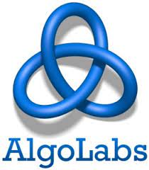
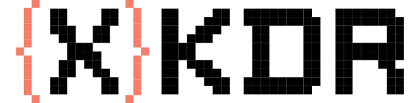
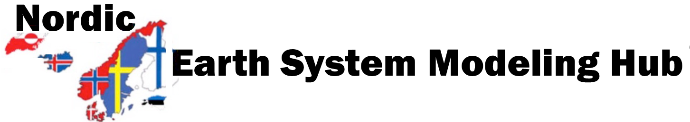

Experience
Dec 2024 -
Mar 2024 - Nov 2024
True Beacon
Quantitative Research Intern
- Researched Factor Model Research for Indian Markets.
- Optimized Portfolio Management through conducting in-depth analysis to validate and refine existing models using Machine Learning and Statistics.
- Worked on Algorithm to Pick Mutual Funds and Recreate them using low-cost indices.
Feb 2023 - Jun 2023
Trumpf Metamation
Project Intern
- Fine-tuned robot precision using Image Processing for edge detection of metal sheets using MATLAB and OpenCV2, wrote code for Raspberry Pi to guide the robot to pick the sheets from the correct position and orientation.
- Wrote code to find qr-like marks on a metal sheet to find height and its bend angle.
Dec 2022 - Feb 2023

AlgoLabs
Machine Learning Intern
- Implemented OpenAI's Whisper model to make a Video ASR to transcribe Video captioning. Also made pipelines for it to auto-test its accuracy on pre-captioned videos online.
- Created a model for Invoice Image to Data with labels using PyTesseract and LayoutLMV3.
Aug 2022 - Nov 2023

XKDR Forum
Julia Dev Intern
- Contributed to the package NISTTests.jl which calculates how precise a Linear Regression Model is.
- Made functions in R and Julia to calculate the given model's output and compare them with certified data. Wrote Source Code, Documentation, and Test cases for the package.
Jun 2022 - Aug 2022

Galaxy Project: Nordic Earth System
Summer Intern
- Created a visualization tool using Python, XML, Planemo.
- Analyzed monthly data from satellites, such as MEERA GLDAS to make Time series plots, CSV files, and create animated cartographic projections, and analyzed Landsat-8 data to calculate NDVI over a region.